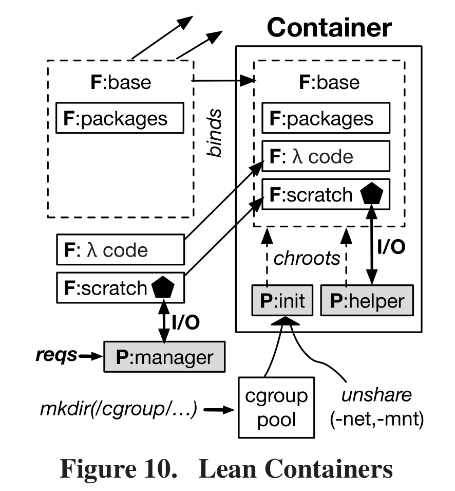
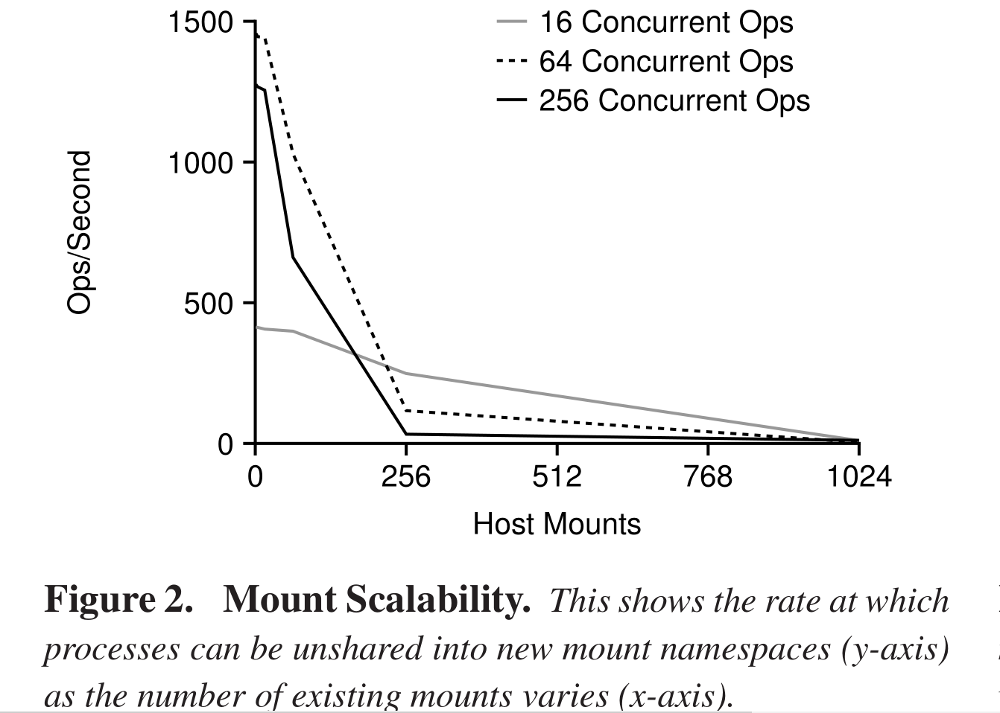
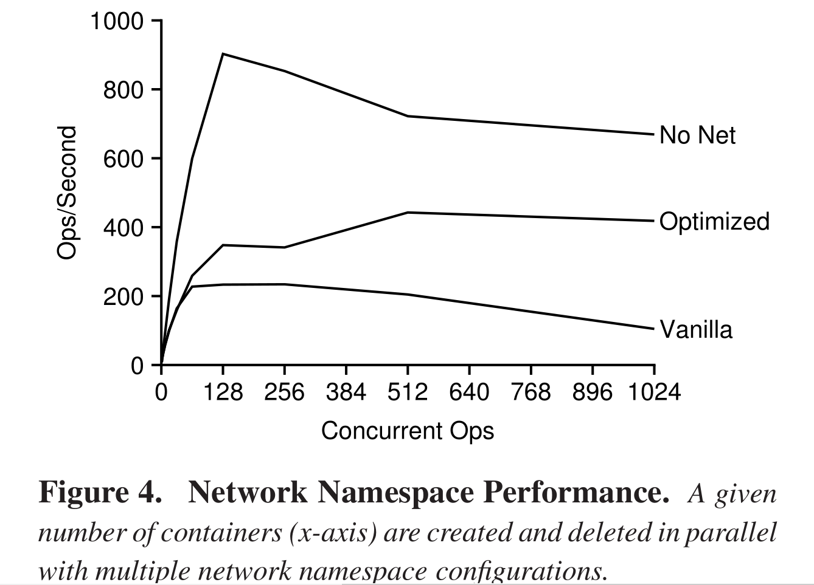
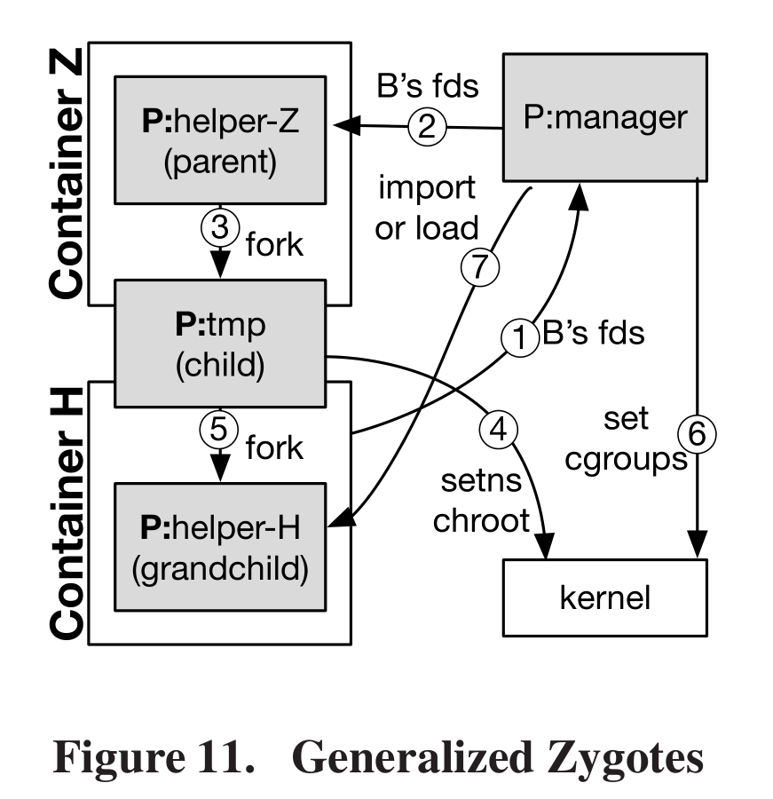
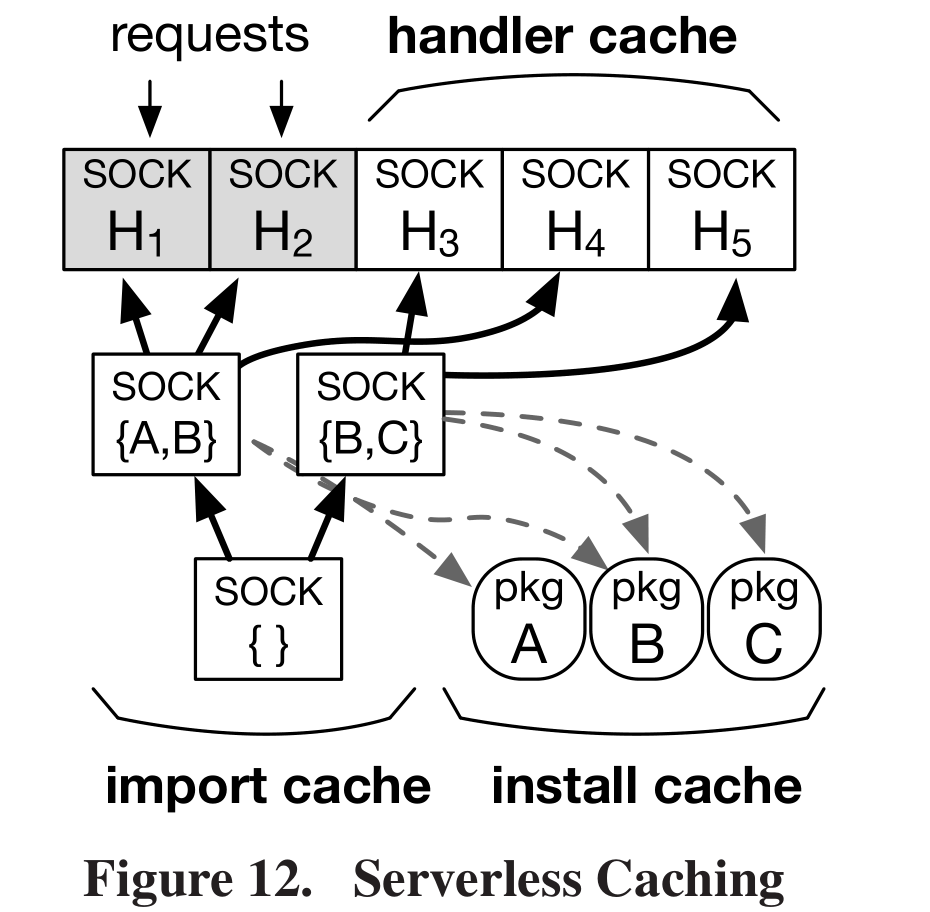
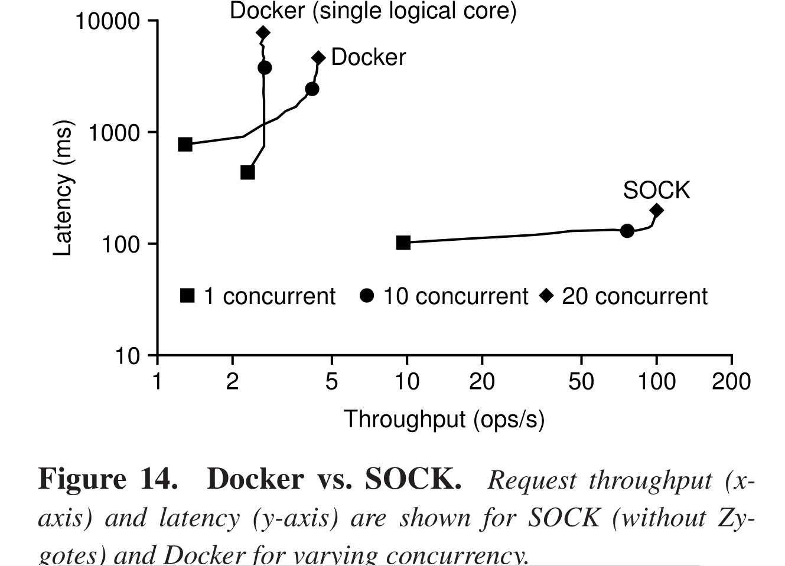
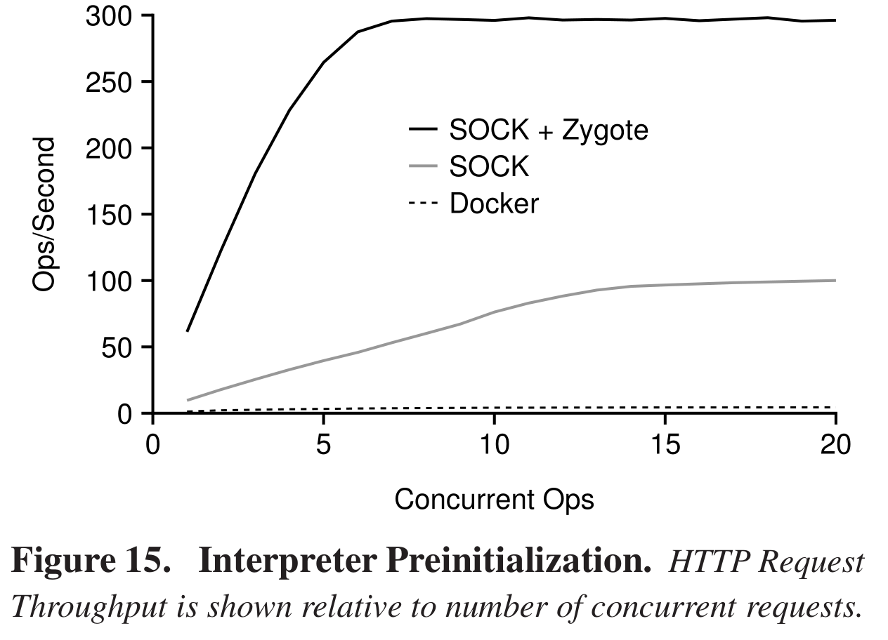
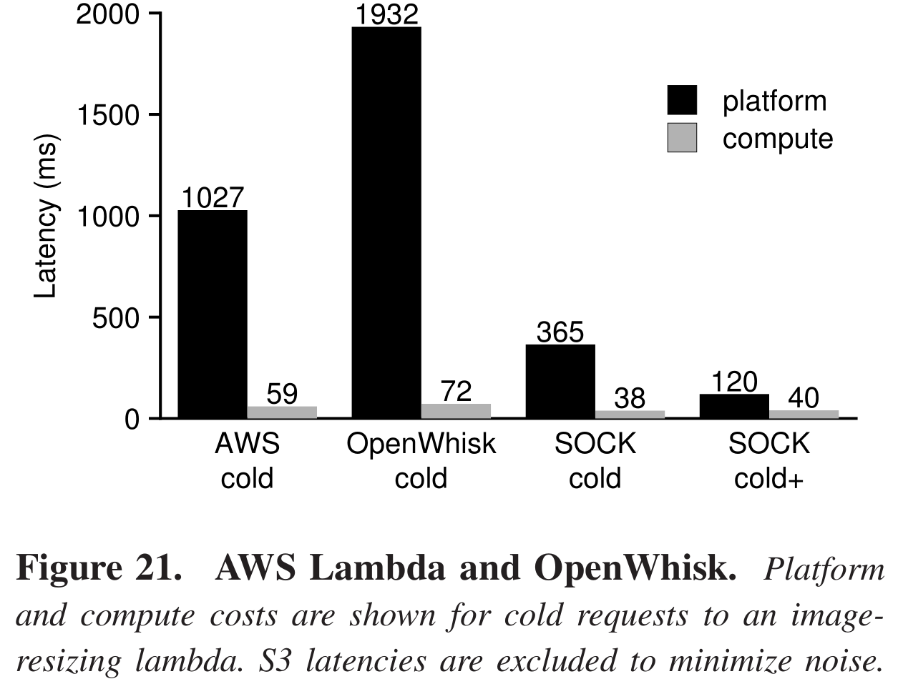

Background
这篇文章讲了一个有关优化容器启动时间的方案，因为docker的到来，相信很多人对于容器的概念并不陌生，但是可能也存在一些偏差。Docker并不单单传统意义上的容器，而是早就存在的Linux container的一个管理收集者。
维基上是这么对docker定义的：Docker是一个开放源代码软件项目，让应用程序布署在软件容器下的工作可以自动化进行，借此在Linux操作系统上，提供一个额外的软件抽象层，以及操作系统层虚拟化的自动管理机制。 Docker利用Linux核心中的资源分离机制，例如cgroups，以及Linux核心名字空间，来创建独立的软件容器。
也就是说Docker本身是对container进行创建初始化管理的一个机制，毫无疑问，本文会就docker机制产生的问题，当然只是以docker为例，还提出了一些常见问题，然后就这些问题提出了解决方法。
首先，弄清楚这篇文章，我们需要对一些名词做出解释：
serverless computing ：指的是一种由云服务商作为server，动态管理资源的配置的云计算模型，对于开发运维人员来说服务器管理以及资源规划的决定都是不可见的。可和传统的代码编写结合，例如微服务(一种软件开发的技术，一种以服务为导向的体系结构的变种，通过服务之间松耦合构成application.)
Zygote:
下文摘自 http://wiki.jikexueyuan.com/project/deep-android-v1/zygote.html
Zygote本身是一个Native的应用程序，和驱动、内核等均无关系。这个概念是Android中提出的，在Android体系中，Zygote主要做了如下的工作。1
2
3
4
5
6
7
8
9
10第一天：创建AppRuntime对象，并调用它的start。此后的活动则由AppRuntime来控制。
第二天：调用startVm创建Java虚拟机，然后调用startReg来注册JNI函数。
第三天：通过JNI调用com.android.internal.os.ZygoteInit类的main函数，从此进入了Java世界。然而在这个世界刚开创的时候，什么东西都没有。
第四天：调用registerZygoteSocket。通过这个函数，它可以响应子孙后代的请求。同时Zygote调用preloadClasses和preloadResources，为Java世界添砖加瓦。
第五天：Zygote觉得自己工作压力太大，便通过调用startSystemServer分裂一个子进程system_server来为Java世界服务。
第六天：Zygote完成了Java世界的初创工作，它已经很满足了。下一步该做的就是调用runSelectLoopMode后，便沉沉地睡去了。
以后的日子：Zygote随时守护在我们的周围，当接收到子孙后代的请求时，它会随时醒来，为它们工作。
其中JNI函数的作用：
· Java程序中的函数可以调用Native语言写的函数，Native一般指的是C/C++编写的函数。
· Native程序中的函数可以调用Java层的函数，也就是在C/C++程序中可以调用Java的函数。sandbox(沙盒机制)
沙盒是一种安全机制，为运行中的程序提供的隔离环境。通常是作为一些来源不可信、具破坏力或无法判定程序意图的程序提供实验之用。 沙盒通常严格控制其中的程序所能访问的资源，比如，沙盒可以提供用后即回收的磁盘及内存空间。常用的系统命令：
1
2
3
4
5
6
7chroot是在unix系统的一个操作，针对正在运作的软件进程和它的子进程，改变它外显的根目录。
一个运行在这个环境下，经由chroot设置根目录的程序，它不能够对这个指定根目录之外的文件进行访问动作，不能读取，也不能更改它的内容。
称作"chroot监狱"，简化了安全设计，可以创造一个沙盒环境。
unshare : run program with some namespaces unshared from parent.
setns:
int setns(int fd, int nstype);
Reassociate thread with a namespace, On success, setns() returns 0. On failure, -1 is returned and errno is set to indicate the error.Openlambda
OpenLambda is an Apache-licensed serverless computing project.基于Linux容器，主要目标是探索一个serverless computing的新方法。AUFS(advanced multi-layered unification filesystem)
主要功能是把多个文件夹的内容合并到一起，提供一个统一的视图，主要用于各个Linux发行版的livecd中，以及docker里面用来组织image。Linux的namespace，对于每一个命名空间，从user的角度看都是一个单独的机器，有着自己init进程且PID为0，其他进程PID依次递增。命名空间的类型大致可以分为下面几种：
1
2
3
4
5
6
7
8UTS(Unix Timesharing System)包括内存名称、版本、底层体系结构等信息
IPC: 保存所有与进程间通讯有关的信息。
MNT: 当前装载的文件系统
PID: 有关进程ID的信息
NET: 网络信息
USER: 资源配额信息
cgroup: Cgroup namespaces virtualize the view of a process's cgroups as seen via /proc/[pid]/cgroup and /proc/[pid]/mountinfo.
eg:cgroups: Control group,资源控制组，通过给这个cgroup分配可用资源，控制这一组进程可用资源。
正文
因为设计到操作系统，很多概念和步骤，不像其他的论文那么好说，我就尽量把我的理解说清楚。
这篇文章的主要创新点是简化容器的创建过程，通过这个”瘦身过程”，容器启动速度可以达到docker的18倍，而后引入了”generalized Zygotes”的概念，主要功能是避免子process重复进行相同的initialization的工作以及避免重复copy消费额外内存。这会带来额外的3X的速度提升，最后通过一个”three-tier caching system”使得速度较没有使用Zygote的SOCK提升了45倍，也就可以理解为是一般Zygote的15倍。
所以不难得出我们SOCK With Openlambda 的构成应该分为三部分：
(1) lean-containers (2)”generalized Zygotes” (3)”three-tier caching system”
这里我没有采用和原文相同的结构，因为第一节结构container机制(“Deconstructing Container Performance”)以及第二节对于python包的统计处理(“Python Initialization Study”)只是介绍SOCK的理论工具。
(1) lean-containers

a. 创建一个容器用于构造一个根文件系统
要给容器分出来一个文件系统。部署一个文件系统需要两个步骤：
首先，要将容器所需要的数据以及一些必要代码填充宿主机上分离出的子目录，。Docker通常是采用AUFS,provided a flexible-layered-composition mechanism and gives running containers copy-on-write access over underlying data,SOCK采用的是bind-mounting；
然后，将该子目录作为容器的根目录。 Docker accomplish this by creating a new mount namespace,then restructuring it.SOCK采用更加简单的chroot操作。
b. 创建沟通机制
上图中的五边形是负责Openlambda Manager和容器内的process之间的通信。
c. 限制isolation的边界
Linux process may be isolated with a combination of cgroup(for the performance isolation) and namespace primitives(for logical isolation).创建cgroup会有很大的开销，Openlambda创建一个cgroups的pool并且维持它。
之所以在创建新的namespaces的时候使用unshare(mnt and net),原因如下图所示:

随着host mount的数目增长，命名空间可被复制率趋近于0.所以利用unshare命令阻止mnt namespaces的创建和删除。因为我们对SOCK的init以及helper两个进程都是用chroot操作的，所以不会影响文件间关联属性。

Vanilla这条线是同时对五个namespaces（UTS,IPC,MNT,PID,NET)进行创建和删除的表现，经过一个简单的处理(disable IPv6 and eliminating the costly broadcast code)处理吞吐量峰值可以达到400 containers/s。直接eliminate network namespaces可以达到900containers/s.那么这样会不会产生问题呢？
Network namespaces are unnecessary because requests arrive over Unix domain socket,not over a socket attached to a fixed port number, so port virtualization is not required.
(2) generalized Zygotes
对于Figure 10中的SOCK的container构造，不难看出init是负责对于命名空间的建立，前面也提到五边形是scratch-space中负责通信的部分，那么helper的功能是什么呢？helper是一个监听SOCK的通信频道的python程序。两个功能：pre-importing modules and loading lambda handlers to receive subsequent forwarded events。
这里我们提出了Zygote的概念，为了达到一个什么目的呢？就是能够尽可能的减少pre-import的时间，这些module会存在于一个个的Zygote中。要达到这个目的，首先由Zygote helper预导入一些模块，如果一个lambda需要这些模块，Zygote helper 就会被fork，创建一个新的handler helper。下图则是我们fork Zygote的过程。

(3)three-tier caching system

对三个方面进行cache：
- handler cache维持一些理想型的handler container处于休眠状态，但是会消耗内存资源，所以采用LRU机制进行更新。
- install cache占据大量空间的disk.
- import cache 是针对Zygotes的一个cache方案，不是简单的hit，而是在hit结束之后判断是否是malicious，然后进行重新选择。对于import-cache的eviction，计算内存资源不易完成，所以定义了两个变量。
Benefit:磁盘占据空间，Cost:最近使用次数。
通过两者之比进行一个eviction的操作。
实验
对于实验，挑几个我觉得比较重要和核心的部分放上来。



总结
巧妙的利用了linux系统下的命名空间以及资源调配的各种操作对container的结构进行”瘦身”，考虑了throughput，scalability等在docker上存在的问题，并且依据自己设计的cache机制进行解决,最后实验结果简直快的不行。三个字，太难了~中间有一些细节的解释没看懂，因为要参考其他论文，先不看了，我只是说了这篇文章的整体脉络。=_=